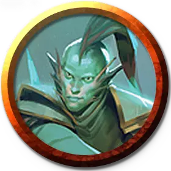

Профессор сущности Квандрикса
Quandrix Professor of Substance
Маленький или Средний Гуманоид (Волшебник), любое мировоззрение

Класс Доспеха 12 (15 с доспехом мага)
Хиты 104 (16к8 + 32)
Скорость 30 футов
| мод | спас | ||
|---|---|---|---|
| СИЛ | 11 | +0 | +0 |
| ЛОВ | 14 | +2 | +2 |
| ТЕЛ | 14 | +2 | +5 |
| мод | спас | ||
|---|---|---|---|
| ИНТ | 19 | +4 | +7 |
| МДР | 14 | +2 | +5 |
| ХАР | 13 | +1 | +4 |
Навыки Восприятие +5, Магия +10, Природа +7, Расследование +10
Сопротивление урону силовое поле
Чувства пассивное Восприятие 15
Языки Общий, и ещё четыре любых языка
Опасность 7 (2900 опыта)
Бонус мастерства +3
Действия
Мультиатака. Профессор совершает две атаки Пространственным клинком.
Пространственный клинок. . Рукопашная или дальнобойная атака заклинанием: +7 к попаданию (цель не получает преимуществ от укрытий меньше, чем полное укрытие), досягаемость 5 футов или дистанция 120 футов, одна цель. Попадание: 13 (2к8 + 4) урона силовым полем или 22 (4к8 + 4) урона силовым полем, если профессор Большого размера или больше, профессор может оттолкнуть цель на расстояние до 10 футов в горизонтальном направлении.
Использование заклинаний. Профессор накладывает одно из следующих заклинаний, используя Интеллект в качестве базовой характеристики (Сл спасброска от заклинаний 15):
• Неограниченно: указание [guidance], волшебная рука [mage hand], починка [mending] (накладывается действием);
• 1/день каждое: сотворение [creation] (накладывается действием), переносящая дверь [dimension door], доспехи мага [mage armor], рост растений [plant growth], превращение [polymorph].
Бонусные действия
Дилатация (Перезарядка 5-6). Профессор волшебным образом изменяет свою физическую форму до тех пор, пока он снова не использует это бонусное действие, пока он не станет недееспособным или не умрет, или пока он не отменит эффект (никаких действий не требуется). Выберите один из следующих вариантов:
• Расширение. Профессор становится Большим, если есть достаточно места для его увеличения. Он с преимуществом совершает броски атаки, а также в проверки характеристик и спасброски, основанные на Силе.
• Сокращение. Профессор становится Маленьким. Его скорость ходьбы увеличивается до 60 футов, броски атаки по нему совершаются с помехой, и он получает преимущество на проверки характеристик и спасброски основанные на Ловкости.
Реакции
Уклончивый перенос (2/день). Когда по профессору попадают броском атаки, он может увеличить свой КД на 3 против этой атаки, что потенциально может привести к её промаху. После чего профессор может телепортироваться вместе с любым снаряжением, которое он носит или несет, на расстояние до 30 футов в свободное пространство, которое он может видеть.
Описание
Профессора сущности специализируются на конкретики философии Квандрикса, манипулируя физическими размерами и свойствами роста. Их магия изменяет и заменяет уравнения, которые описывают естественный мир, включая существ, пространство и материю. С помощью этих манипуляций профессора изменяют свой размер и физическую форму других, управляют природой, заставляя ее быстро разрастаться, мгновенно перемещаются и даже сворачивают пространство в смертоносные лезвия.
Эти профессора учат, что числа и математика - это не просто интеллектуальные понятия, но что они существуют физически во всех вещах. Профессора сущности учат своих студентов практически владеть магией, создавая ощутимые изменения в окружающем мире.
Учёные квандрикса
Ученые факультета Квандрикс сосредоточены на математических принципах, которые управляют реальностью. С помощью этих формул они могут манипулировать свойствами материи и пространства, а также абстрактным и абстрактным пространством, таким как разум, вероятность и сам поток магии.